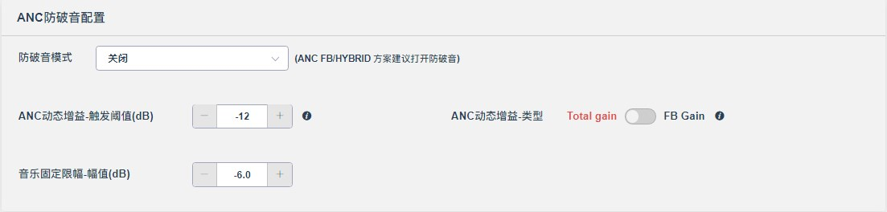
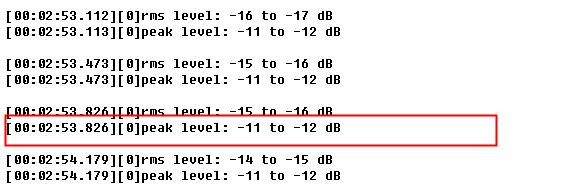

12.4.3. ANC防破音配置

12.4.3.1. 需求简介
需求场景：
1） 正常佩戴，播歌最大音量+ANC模式 破音问题；
2）挤压/摘下耳机，或者佩戴位置不同，造成耳机次级通路SZ的变化，导致音乐补偿错误，引发破音，其中头戴式耳机较为明显。
关键词：(问题)音乐大音量破音、（输出）牺牲音乐输出 or 牺牲ANC性能
CPU差异： 仅
AC700N、JL701N系列需要此功能，后续芯片不需要。
12.4.3.2. 配置说明
防破音模式：
关闭：不启动防破音；
音乐固定限幅：牺牲音乐，限制音乐最大输出： + 音乐固定限幅-幅值(dB) : DAC限幅幅值，软件全程有效；
ANC动态增益：牺牲ANC性能：
ANC动态增益-触发阈值(dB) : 阈值越小，对ANC性能影响越大；
ANC动态增益-类型：
Total Gain 对降噪影响大，触发快，无杂音;
FB Gali对降噪影响小，触发慢，可能有杂音；
12.4.3.3. ANC动态增益调试说明
12.4.3.3.1. 调试配置项
打开功率打印：
/* 文件位置：./audio/common/amplitude_statistic.c */
#if 1 // ANC动态增益调试 需 打开此打印使能
#define amplitude_log printf
#else
#define amplitude_log(...)
#endif/*log_en*/
12.4.3.3.2. 调试步骤
调试前提：用SZ的参考方式调试音乐补偿的性能，且音乐补偿的性能可靠，具体可参考（ANC调试手册 第三章节 3.4 音乐补偿）<br>
Step 1. 将 ANC动态增益-触发阈值(dB) 配置为 0；
Step 2. 耳机播放低频丰富的歌曲，如DJ或低音试音碟；
Step 3. 摘下耳机（或其他会造成耳机破音的场景），在ANC_ON/ANC_OFF情况下对比歌曲的音质变化，不断减低音量，直到ANC_ON/ANC_OFF 歌曲音质区别不明显，即在ANC_ON情况下，音乐不失真。（建议用windows的音量调节，音量刻度有100级）；
Step 4. 打印下当前的音乐信号peak值，将该peak值设置的触发阈值，如某款耳机peak值为-12dB时，不失真,则设置**ANC动态增益-触发阈值(dB)**为 -12。

注意事项：
无打印线的整机，可执行到
Step 3时，记录下不破音的音量以及歌曲播放时间位置，用相同软件烧录到带打印线的裸板或者开发板中，查看当前音乐响度对应的peak值，执行Step 4；如果没有打印环境，只能盲调减小 ANC动态增益-触发阈值(dB) 直到不破音, 或者将功率通过蓝牙SPP打印出来。